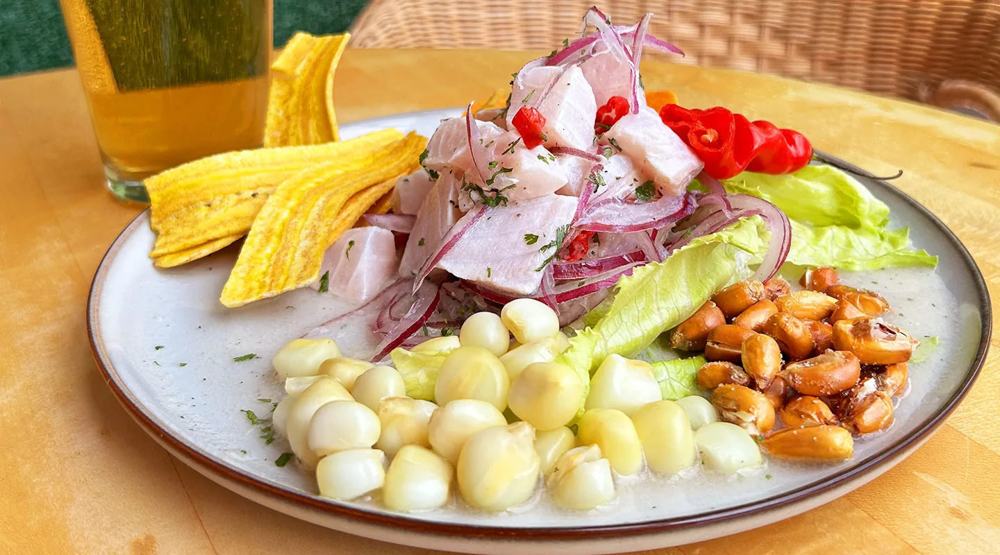
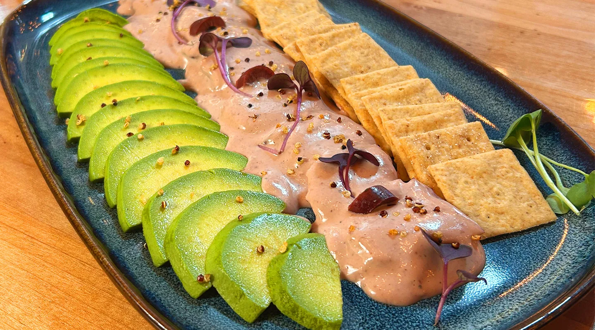

SumaQ on 17th
Fusion of Flavours That Fills the Heart
Cooking is the most genuine act of love and care. Guided by this belief, we celebrate and blend the flavours we cherish, inviting you to experience a journey through the rich and vibrant diversity of our cuisine.
View Menu
Enjoy Our Flavours at Home
Order your SumaQ favourites directly from our kitchen and enjoy the flavours that fill the heart at home.